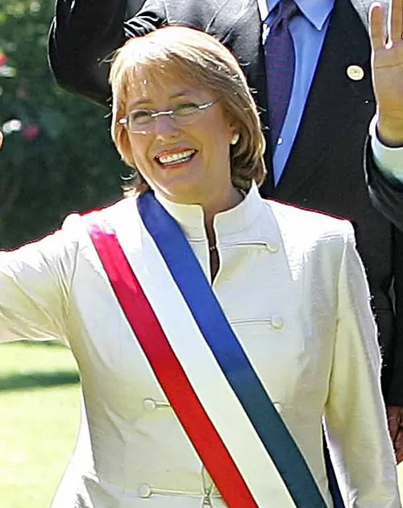

Michelle Bachelet, primera presidenta

Michelle Bachelet, médica y militante socialista, ganó la segunda vuelta presidencial del 15 de enero de 2006 frente a Sebastián Piñera, como candidata de la Concertación. El 11 de marzo de 2006 asumió en el Congreso Nacional, en Valparaíso, como la primera mujer presidenta de Chile. Su historia personal estaba marcada por la Dictadura militar: su padre, el general de la Fuerza Aérea Alberto Bachelet, murió en 1974 mientras estaba detenido, y ella y su madre estuvieron detenidas antes de partir al exilio. Su primer gobierno (2006–2010) formó el primer gabinete paritario del país, impulsó la reforma previsional de 2008, que creó la pensión básica solidaria, y el sistema de protección a la infancia Chile Crece Contigo. Enfrentó la movilización de estudiantes secundarios de 2006, conocida como "revolución pingüina", y los problemas del Transantiago, y al final del periodo el Terremoto y tsunami del 27F. Terminó su mandato con alta aprobación ciudadana. Volvió a gobernar entre 2014 y 2018 y luego fue Alta Comisionada de las Naciones Unidas para los Derechos Humanos. Su elección se considera un hito en la participación política de las mujeres en Chile.
Versión para niños
El 11 de marzo de 2006, Michelle Bachelet se convirtió en la primera mujer en ser presidenta de Chile. Asumió el cargo en el Congreso Nacional, en Valparaíso. Es médica y antes había sido ministra de Salud y ministra de Defensa. Para muchas niñas y mujeres fue un ejemplo de que podían llegar a los cargos más importantes del país. Años después, volvió a ser elegida presidenta.
Para maestros
Nivel sugerido: 2° medio
Objetivo: Analizar la elección de la primera presidenta de Chile como un hito en la participación política de las mujeres.
Preguntas para la clase:
- ¿Qué cambios en la sociedad chilena hicieron posible la elección de una mujer como presidenta?
- ¿Cómo ha cambiado la participación de las mujeres en política desde el Voto femenino de 1949?
- ¿Qué desafíos siguen existiendo para la igualdad de género en la política?
Actividad (20–30 min): Los estudiantes construyen una línea de tiempo de mujeres pioneras en la vida pública chilena (sufragistas, primeras parlamentarias, primeras ministras, primera presidenta) e identifican qué obstáculos enfrentó cada una.
Fuentes sugeridas: Biblioteca del Congreso Nacional (BCN); Memoria Chilena; Museo Histórico Nacional.
Objetivos de Aprendizaje (Currículum Nacional)
- 6° básico · HI06 OA 07 Explicar y dar ejemplos de la progresiva democratización de la sociedad durante el siglo XX … la participación de la mujer en la vida pública
- 2° medio · HI2M OA 21 Analizar la sociedad chilena posterior a la recuperación de la democracia … y la demanda de derechos de grupos históricamente discriminados
- 4° medio (Educación Ciudadana) · FG-ECIU-4M-OAC-05 Relacionar de manera fundamentada los conceptos libertad, igualdad y solidaridad, con desafíos y problemas de la democracia como … la equidad de género
Personajes
Revisión humana pendiente. Cómo se revisa · Reportar un error
Cómo citar: Historia de Chile. (2026). Michelle Bachelet, primera presidenta. En Historia de Chile: atlas y línea de tiempo. https://moises-salgado.github.io/historia-de-chile/momento/michelle-bachelet-primera-presidenta.html